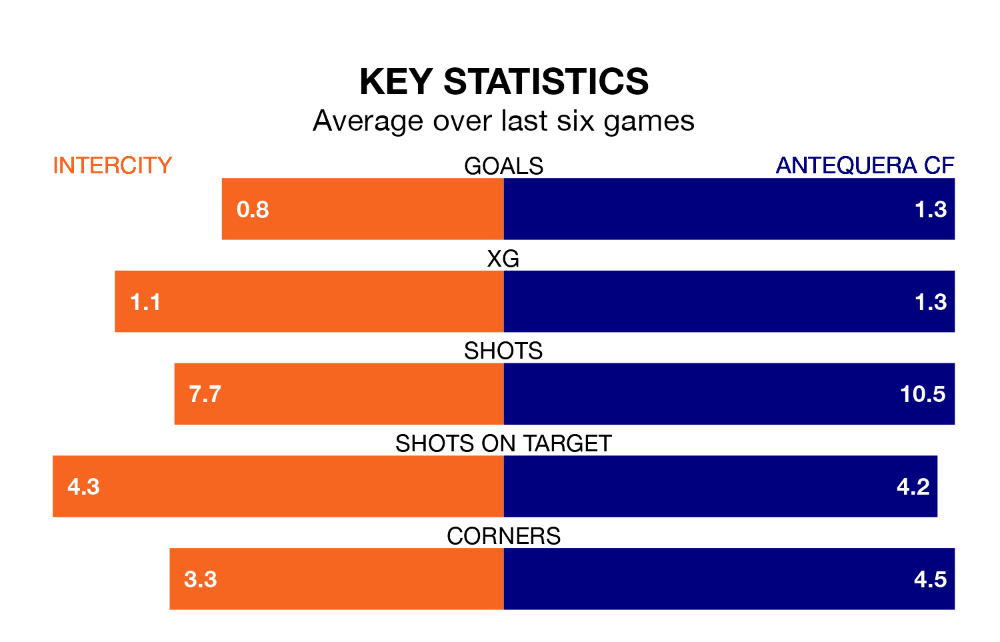

Intercity host Antequera CF on Sunday in Primera Division RFEF Group 2.
In their last league match, on March 17, Intercity lost to Málaga CF 1-0 away.
Antequera drew, 1-1 at home against Recreativo de Huelva on March 16, with Luis Miguel Redondo Fernandez scoring their goals.
In Redondo Fernandez, Antequera have one of the league's most on-form strikers so far this season. He has notched 10 goals in 23 appearances, to sit second in the scoring charts.
His goal rate of one every 197 minutes is slightly quicker than that of Emilio Nsue López, Intercity's top scorer with a goal every 148 minutes, and a total of seven goals in 16 games.
With 29 goals in 28 games so far this season, the home team are scoring at below the league average rate with 1.0 goals per game. And they are conceding at an average rate, letting in 32 goals at a rate of 1.1 per game.
The visitors, meanwhile, are above average scorers, with 1.2 goals per game, compared to a league average of 1.1. They have also conceded 1.2 goals per game.
Antequera are eighth in the table after 28 games, of which they have won 11 and drawn seven, earning 40 points.
Intercity are two places behind Antequera in 10th, with 10 wins and eight draws putting them on 38 points.
Intercity are in mixed form in Primera Division RFEF Group 2, with three wins and three losses from their last six games.
With two wins and two draws over that period, the away side's form is slightly worse – they have taken eight points from 18, compared to the hosts' nine.
Updated: 10:19 (UTC), 22/03/24